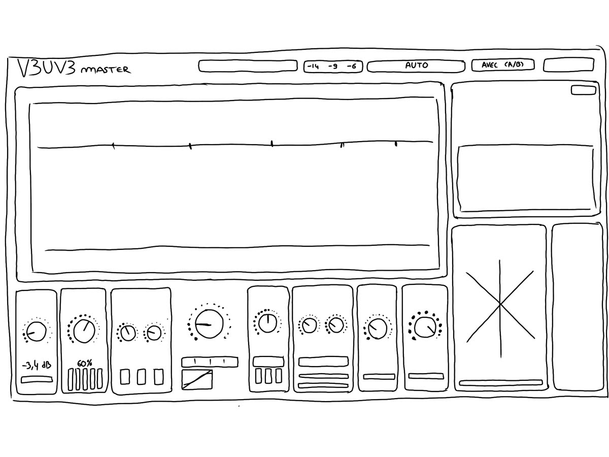
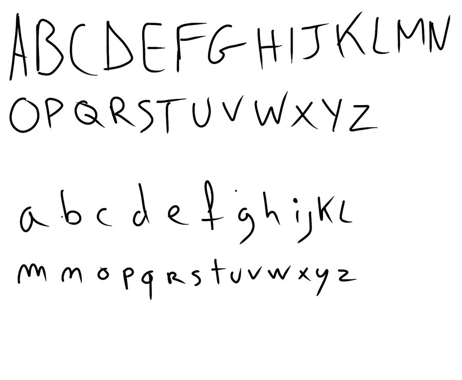

ENTREE
INPUT
Le volume qui entre dans la chaîne, de -18 à +18 dB. Le compteur montre la crête d'entrée.
Une chaîne de mastering complète en sept modules, avec un réglage automatique qui amène ton morceau au volume que tu choisis. Toute l'interface est dessinée au stylo, sur papier, jusqu'aux lettres.
Mets en boucle le passage le plus fort de ton morceau et clique sur AUTO. En 10 à 20 secondes, le plugin règle toute la chaîne pour toi.
Il écoute 6 secondes et garde les 3 plus fortes : volume, crêtes, part de basses, part d'aigus et largeur stéréo.
Il règle chaque module d'après ce qu'il a entendu. Un mix très dynamique reçoit plus de compression et de clip. Un mix trop étroit est élargi.
Il mesure la vraie sortie et corrige le volume d'entrée, jusqu'à trois fois, pour tomber sur la cible à 0,5 LU près.
En LUFS. -9 est la cible par défaut. Si AUTO n'entend rien, il affiche PAS DE SIGNAL et ne touche à rien.
Glisse un morceau de référence sur le plugin : wav, aiff, flac, mp3, m4a ou ogg. Avec une référence chargée, AUTO copie trois choses :
Ton projet garde seulement l'analyse de la référence, pas le fichier audio.
L'entrée est tracée au crayon, la sortie au stylo. La ligne épaisse montre en direct ce que coupe le module Spectral, et la ligne en pointillés la correction vers ta référence. La bande TONE, dessous, montre ce que la chaîne change dans le son, à volume égal.
Sept modules. Chacun s'allume et s'éteint d'un clic sur son rond, sans craquement.
Le volume qui entre dans la chaîne, de -18 à +18 dB. Le compteur montre la crête d'entrée.
Cinq bandes qui coupent seulement quand une zone ressort trop. Tu les déplaces à la souris, directement sur le spectre.
GLUE soude le mix, sur trois bandes. DETAIL remonte les petits détails cachés sous le seuil.
Quatre couleurs : CLEAN, TUBE, TAPE et TRANSFO. Un vrai circuit à diodes modélisé, suréchantillonné 8 fois, à volume compensé.
Élargit les médiums et les aigus sans toucher au centre. LM met tout ce qui est sous 150 Hz en mono.
LOW ajoute du poids avec des harmoniques, et SUB une octave plus bas. AIR fait briller tout ce qui est au-dessus de 7 kHz.
Arrondit les crêtes avant le limiteur, pour gagner du volume sans que le son pompe.
Limiteur true peak qui anticipe de 1,5 ms. Il mesure les crêtes comme un vrai compteur true peak, donc rien ne dépasse ton plafond.
LUFS court terme, momentané et intégré, crête true peak maximale, et 60 secondes d'historique avec les repères -9, -14 et -23.
Vectorscope et corrélation : tu vois tout de suite si ton mix risque de disparaître en mono.
Les crêtes gauche et droite face au plafond.
En haut à droite, un mot résume l'état de ton master :
Un clic pour réentendre le son d'origine, retardé exactement comme le son traité. Tu compares ton master au mix de départ sans décalage.
Pas de banque d'images, pas de modèle tout fait. V3UV3 MASTER est parti d'une feuille et d'un stylo.

L'interface suit le croquis trait pour trait. Chaque cadre, chaque potard est tracé avec un léger tremblement, comme une ligne à la main, mais fixe : rien ne bouge ni ne scintille pendant que tu travailles.

Chaque lettre a été découpée dans cette feuille, épaissie pour rester lisible en tout petit, puis transformée en vraie police. C'est elle qui écrit tout dans le plugin, et tous les titres de cette page.
TUBE, TAPE et TRANSFO ne sont pas de simples courbes : c'est un écrêteur à diodes modélisé composant par composant, suréchantillonné 8 fois pour ne pas créer de parasites dans les aigus. Le volume est compensé : tu entends la couleur, pas juste « plus fort ».
Il voit les crêtes entre les échantillons, celles qui saturent après conversion en MP3 ou sur le streaming. Il les mesure par suréchantillonnage 4 fois, la même méthode qu'un compteur true peak de référence, et anticipe de 1,5 ms.
Le compteur suit la norme de mesure du streaming et de la télé (ITU BS.1770-4). Sur les fichiers de test officiels de l'EBU, il tombe juste à 0,02 LU près.
Essai fini ou abonnement arrêté : le plugin laisse passer ton son intact. Pas de silence, pas de bruit, pas de bip. Ta session se rouvre telle quelle.
pluginval au niveau le plus sévère (10), en VST3 et en AU.
Le validateur officiel de Steinberg, qui a inventé le VST3 : 47 tests sur 47, et 537 sur 537 en mode étendu.
auval, la validation d'Apple pour les plugins AU.
Des tests automatiques sur le son : AUTO atteint chaque cible à 1 LU près sans dépasser le plafond, aucune crête ne passe le limiteur, aucun clic quand tu changes de couleur de saturation en pleine lecture, et le repliement reste sous -80 dB.
Sans engagement : tu arrêtes quand tu veux. Le plugin marche tant que l'abonnement est actif.
S'ABONNERInstalle, ouvre le plugin dans ton logiciel, clique sur « Activer ». Pas de clé à taper.